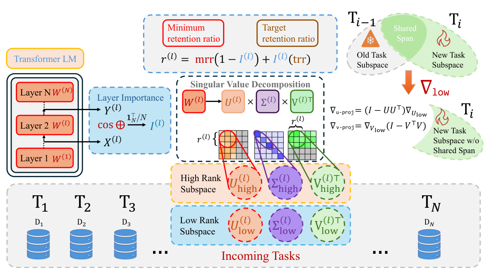

Continual Fine-Tuning Without a Growing Stack of Adapters
- Fine-tuning an LLM on task after task tends to overwrite what it learned earlier (catastrophic forgetting).
- We take an SVD of every weight matrix, protect the directions with large singular values, and let the new task update only the remaining low-singular-value directions.
- How much each layer protects is chosen adaptively from a cheap importance score. The model keeps its size: no adapters, no stored gradients, no replay buffer.
Fine-tune a language model on one task, then another, and the second update can quietly erase part of the first. The usual fixes either freeze most of the model and add a small adapter per task, or keep a copy of old data around. Sculpting Subspaces keeps full fine-tuning but restricts which directions each update can move in.
The intuition
A weight matrix is not equally important in every direction. If you write it as a sum of rank-one pieces ordered by singular value, the first few pieces carry most of what the layer does, and the long tail contributes very little: you can delete much of it without the model noticing (we verify this by pruning in the paper's appendix). That tail is spare capacity, and it is where new tasks can be written without disturbing the old ones.

The method, one equation at a time
Let the model's parameters be the weight matrices \(\theta = \{W^{(1)},\dots,W^{(L)}\}\), trained on a sequence of tasks \(\mathcal{D}_1, \mathcal{D}_2, \dots, \mathcal{D}_T\).
In words: write the layer as output directions \(U\), strengths \(\Sigma\) (sorted largest first) and input directions \(V\). This is done once per task, not every step.
In words: run samples from the previous task through the layer and check whether its output points in the same direction as its input. A layer that mostly preserves its input is carrying representations forward, so it should be protected more. Scores are normalised to average 1 across layers.
In words: every layer protects at least a minimum fraction (mrr); an average layer protects the target fraction (trr); important layers protect more. The top \(r^{(l)}\) fraction of singular vectors form \(U_{\text{high}}, V_{\text{high}}\); the rest are free.
In words: take the ordinary gradient and subtract the part of it that lives in the protected input and output directions. The optimizer then steps with \(\nabla W_{\text{proj}}\), so the update only moves through the free subspace.
Why large singular values?
The principled choice would be to freeze the directions where the old tasks' loss is most curved, which are the top eigenvectors of the Hessian. A second-order Taylor argument in the appendix shows that keeping updates out of those high-curvature directions minimises forgetting. Computing a Hessian for a 7B model is out of the question, though. Prior empirical work finds that large Hessian eigenvalues line up with large singular values of the weights, and that high input–output-similarity layers have higher curvature. SVD plus the layer score is a cheap stand-in for that Hessian computation.
- New task arrives. Compute layer importance I from the previous task's activations.
- SVD each layer. Keep the top r(l) singular vectors as the protected subspace.
- Train with projection. Every gradient step uses ∇Wproj instead of ∇W.
- Repeat. The next task recomputes the split on the updated weights.
The whole algorithm. Nothing grows with the number of tasks: no new modules and no stored data or gradients.
How it performed
We evaluate T5-Large and LLaMA-2 7B on the standard 5-task and the longer 15-task continual-learning sequences (average accuracy after the last task, averaged over three task orders), and LLaMA-2 7B-Chat on the harder TRACE benchmark.
| Method | T5-Large, 15-task sequence: average accuracy (%) |
|---|---|
| SeqFT (plain fine-tuning) | 7.4% |
| EWC | 45.1% |
| IncLoRA | 61.2% |
| LFPT5 | 69.2% |
| O-LoRA | 69.6% |
| Ours (adaptive SVD) | 71.3% |
| Multi-task (upper bound) | 76.5% |
| TRACE (LLaMA-2-7B-Chat) | Average accuracy | Backward transfer |
|---|---|---|
| SeqFT | 23.0 | −8.3 |
| O-LoRA | 41.3 | 6.2 |
| Ours (adaptive SVD) | 48.4 | 7.1 |
On the 5-task benchmark with LLaMA-2 7B the method reaches 79.6% average accuracy. After continual learning on TRACE we also check general ability, instruction following and safety against the base chat model. MMLU, TydiQA, BoolQ and PIQA are preserved or improve; GSM8K and BBH drop. Helpfulness and safety win rates are clearly better than replay or sequential LoRA.
Limitations. Results are sensitive to the retention ratios: a badly chosen rank hurts noticeably. The subspace budget is allocated up front, which can be a problem on very long task streams. Repeated SVDs of every matrix also cost compute on large models.
The new idea is not SVD itself. It is using the decomposition to decide where a full-parameter update may go. That puts the method between adapters, which add parameters, and unconstrained fine-tuning, which forgets.